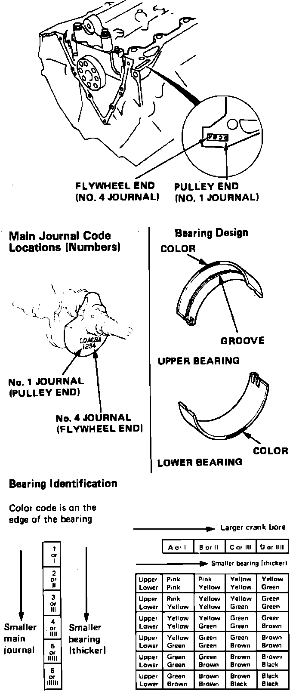
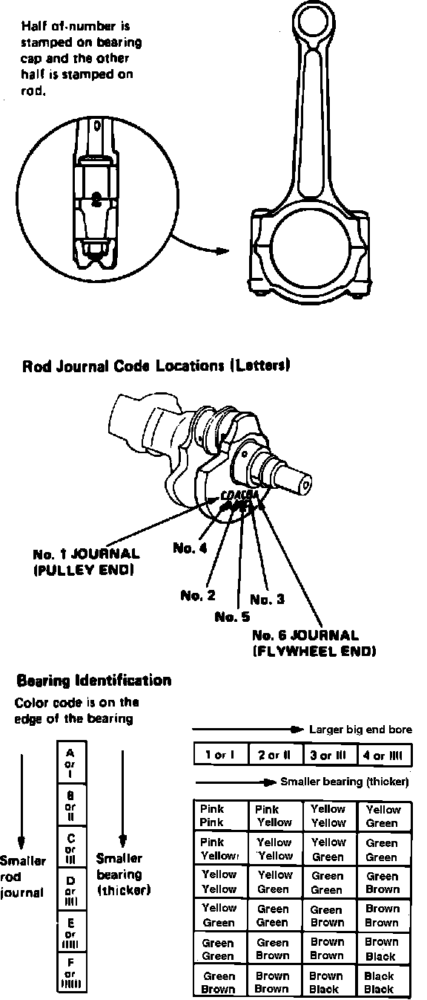

Crankshaft Main Bearing: Service and Repair
Fig. 76 Main Bearing Identification:

Fig. 79 Connecting Rod Bearing Identification:

Marks are stamped on the end of the engine block as a code for each of the main journal bores, Fig. 76. Use these marks in conjunction with numbers stamped on crankshaft to select correct bearings. On Legend models, a bearing cap bridge is used to increase torsional rigidity. When installing main bearings, first torque main bearing cap bolts to 29 ft. lbs., then torque 11mm bridge bolts to 49 ft. lbs. working diagonally from center of bridge, and finally, torque side cap bolts to 36 ft. lbs. Numbers are stamped on the side of each connecting rod to code the size of the big end. Use these numbers in conjunction with letters stamped on crankshaft, Fig. 79, to select correct bearings. On Vigor models, numbers are stamped on the side of each connecting rod to code the size of the big end. Use these numbers in conjunction with letters stamped on crankshaft, to select correct bearings.